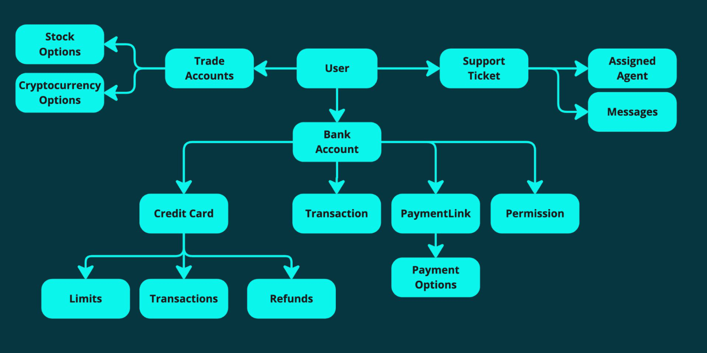

Protège les invariants d’un ensemble d’objets
Délimite la concurrence du système

Le design est guidé par les UseCases et les Invariants
Designer vos Aggregates à partir de vos invariants
Garder les Aggregates aussi petit que nécessaire
Référencer les autres Aggregates uniquement par leur ID
Représente un évènement émis dans notre domaine
Un fait immuable, quelque chose qui s’est produit
Important dans le cadre du domaine
Langage métier
Utiliser l’Eventual Consistency pour mettre à jour d’autres Aggregates
Dans 5ms…
100ms…
1 seconde…
1 minute…
Dans 5ms…
100ms…
1 seconde…
1 minute…
1 jour !